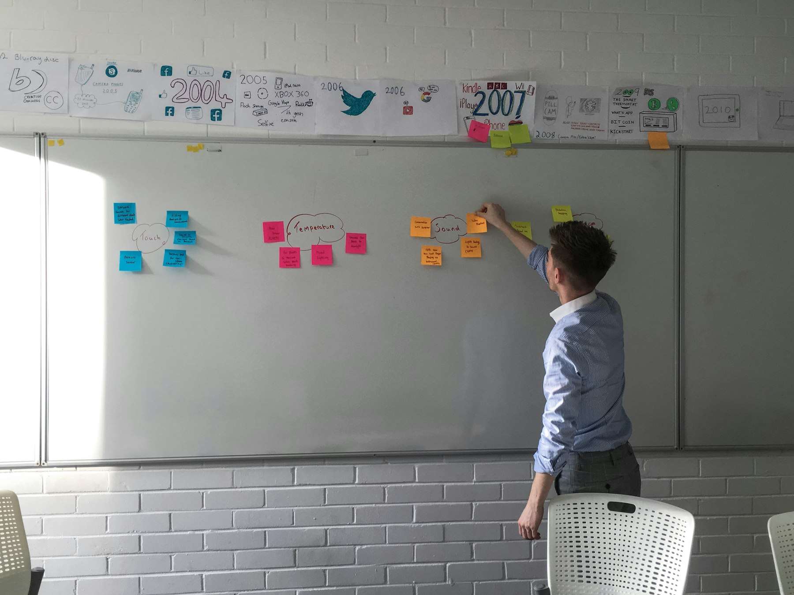

TL;DR
Freelancers should adopt structured workflows like daily reviews and weekly planning to manage multiple projects effectively. Utilize tools like Trello or Todoist for task organization and set specific weekly goals to enhance productivity.
Freelancers Struggling with Project Management
Freelancers often juggle multiple projects simultaneously, leading to overwhelming task lists and scattered priorities. This situation is exacerbated when common tools nourish habits rather than help organize tasks.
Many beginners mistakenly rely solely on digital lists or notebooks without a structured approach, often leading to frustration. For example, freelancers frequently underestimate the time required for each task, which encroaches on deadlines and reduces quality.
The first step to reclaiming control is recognizing how ineffective organization can lead to missed opportunities and increased stress.
Why Common Task Management Advice Often Backfires

### Why Common Task Management Advice Often Backfires
A major pitfall in task organization is the misconception that to-do lists alone suffice for effective management. While they may seem practical for straightforward tasks, over-reliance on them can obscure deeper planning needs.
For instance, three freelancers might kick off their week with a list of tasks—such as “Finish client proposal,” “Revise blog post,” and “Schedule social media posts”—but without attaching specific deadlines, these tasks can quickly become overwhelming.
Instead of actionable insights, they often find themselves buried under incomplete items, leading to a backlog of work.
Imagine if each freelancer has 10 tasks on their list. With no prioritization or deadlines, they might tackle the easiest tasks first, such as scheduling social media posts, while neglecting critical deadlines for client proposals which could result in lost contracts.
When deadlines slip, it can take an additional 2-3 hours per week to catch up, creating a cycle of extended work hours and increased stress.
Another common oversight is the absence of a review cycle. Without regularly assessing completed tasks, freelancers risk missing out on celebrating achievements—like successfully landing a new client or finishing a challenging project—leading to feelings of burnout.
For example, if a freelancer spends four weeks on a major project that results in a satisfied client and positive feedback, not taking the time to reflect on this success can diminish overall motivation.
Furthermore, not tracking progress means they miss crucial productivity metrics; if their average turnaround for tasks used to be three days but, due to poor organization, extends to five days, it can lead to dissatisfied clients and diminished referrals.
Ultimately, this default reliance on to-do lists fosters a chaotic, rushed culture rather than a structured workflow, which can impact the quality of deliverables and long-term success.
Your Essential Workflow for Effective Task Management
Establishing a structured workflow can revolutionize how freelancers manage tasks across multiple projects. Here’s a simple, actionable workflow to implement within a week.
Start by designating a single daily planner, such as Trello or Asana, specifically for task organization. Next, follow these steps: 1. Daily Review: Each morning, spend 15 minutes reviewing tasks and priorities to get clarity. 2. Weekly Planning: At the beginning of each week, allocate 30 minutes mapping out 3 core goals for the week, related to your projects. 3. Task Segmentation: Break these goals into actionable tasks and assign deadlines. 4. Dedicated Focus Blocks: Implement 90-minute focus sessions for task execution, hindering distractions completely. 5. End-of-week Reflection: Reserve 20-30 minutes to assess what worked and where improvements are needed.
By integrating this workflow, freelancers can shift from merely completing tasks to achieving milestones that resonate with project objectives.
14-Day Real-World Scenario: Mastering Project Organization
Consider the case of Mia, a graphic designer managing multiple clients. For the next 14 days, she implements the following approach. On Day 1, she lists and prioritizes all ongoing projects, marking communication deadlines for each.
Mia blocks out time daily for client work based on urgency and importance, alternating sessions between three projects. The key steps involve:
- Daily Task Allocation: Assigning specific tasks to each day based on deadlines and workload allows her to remain on track. - Mid-Week Reviews: By Day 7, she reassesses her progress, adjusting tasks based on a reality check of what is feasible.
- Final Wrap-Up: On Day 14, she not only completes projects but also gathers feedback from clients. This reflection enables her to continually adapt her organization tactics for future projects.
The outcome is not just completed tasks but strengthened client relationships.
Avoidable Mistakes That Derail Productivity
Even with a solid strategy in place, freelancers can easily stumble into common traps. One mistake is underestimating time; a task that seems simple may actually require much more effort than anticipated.
This can lead to incomplete projects and client dissatisfaction. Moreover, failing to track progress is another critical tradeoff. For instance, Mia thought managing tasks through memory was sufficient, but in reality, tracking introduces accountability.
After several weeks, she felt overwhelmed, leading to burnout and missed deadlines. The consequence for freelancers can be tragic: not only do they miss income opportunities, but they compromise their reputation.
A crucial decision point is whether to adopt automated tools like Harvest or TimeCamp that provide insights into where time is spent and if adjustments are needed.
Concrete Tools and Resources to Enhance Task Organization
Freelancers looking to elevate their organizational capabilities can benefit from several tools. First, consider Trello, which allows you to visualize projects with drag-and-drop functionality, ideal for task segmentation.
Another strong option is Todoist, which supports recurring tasks—perfect for ongoing projects. Also, time-tracking tools like Toggl can assist in understanding how time is allocated across tasks.
Here’s what to do next: 1. Choose a Task Management System: Explore tools suited to your needs, whether digital or analog. 2. Set Up a Review Cadence: Commit to a weekly review session to assess what worked. 3. Participate in Online Communities: Engage with forums or groups on platforms like Reddit or LinkedIn, focusing on project management to share insights.
Utilizing these resources equips freelancers with effective strategies, ensuring they can manage complex projects with confidence.
FAQ
What are the best tools for task organization as a freelancer?
Tools like Trello, Todoist, and Asana are popular for managing freelance tasks.
How can I ensure I meet deadlines for multiple projects?
Implement a structured workflow and allocate specific time blocks for task execution.
What common mistakes should I avoid in task management?
Underestimating time required and failing to track progress are key pitfalls.
This article has been reviewed for practical usefulness and updated according to the latest tools and strategies available in task organization.
Turn this into a workflow
Do not stop at ideas. Pick one workflow, test it for 14 days, then keep only what reduces friction.
Search more articles
Find related tools, workflows, and guides.
Photo credits
- Photo 1: Sebastian Herrmann via Unsplash
- Photo 2: Andrew Measham via Unsplash
- Photo 3: Merakist via Unsplash
- Photo 4: Sebastien Bonneval via Unsplash
- Photo 5: Herlambang Tinasih Gusti via Unsplash